motionmark标记:'<,'>s/shiyanlou/oeasy/g 范围内批量替换:'<,'>s/shiyanlou/oeasy/gc 范围内批量替换待确认:'<,'>g/^.*drwxwr.*$/d 范围内有drwxwr的直接删除1行行可视化模式块可视化模式又是什么意思呢？🤔-- 可视 块 --motion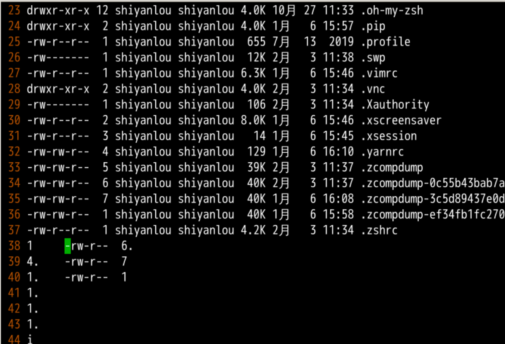
I1.<esc>4个1. 3个11234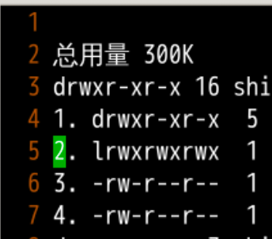
:h v_g_ctrl-a查看手册visual 模式下的g_ctrl-a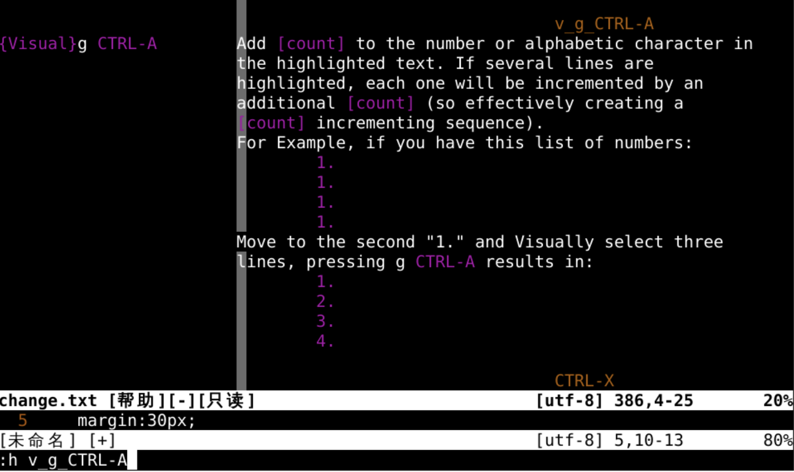
:1,11normal I001. esc2-11行的开头字符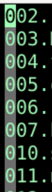
:set nrformat?:set nrformats-=octal-octal 去掉8进制格式:set nrformat?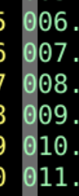
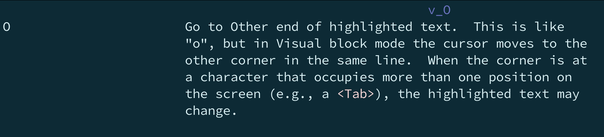
#先安装两个软件 fortune和boxes 在<linux>教程那部分有介绍
sudo apt install fortune boxes
#使用fortune生成谚语
fortune -l
#把谚语通过管道送入boxes
fortune -l ｜ boxes -d cat
#进入vi
:r !fortune -l | boxes -d cat
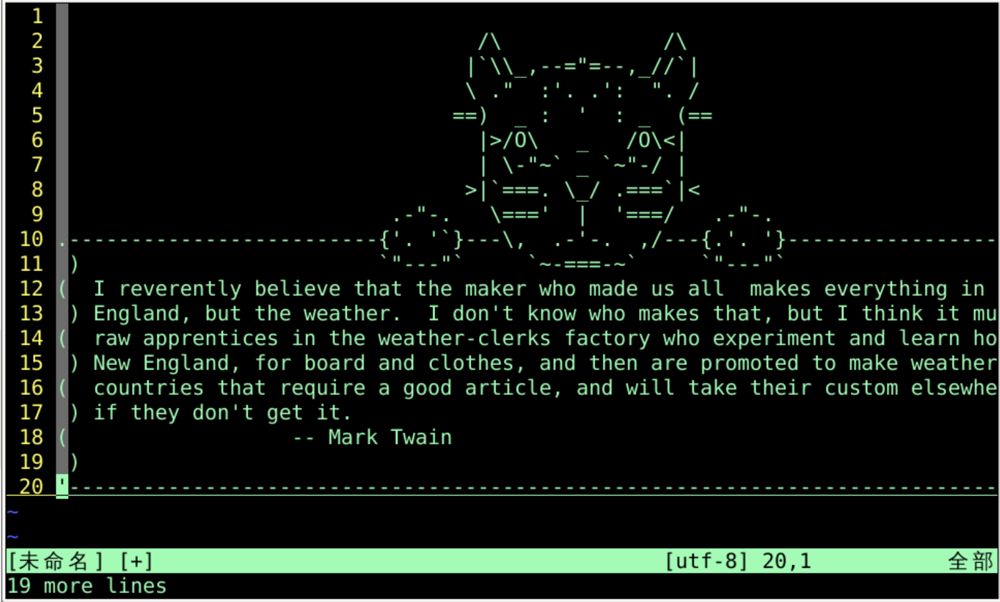
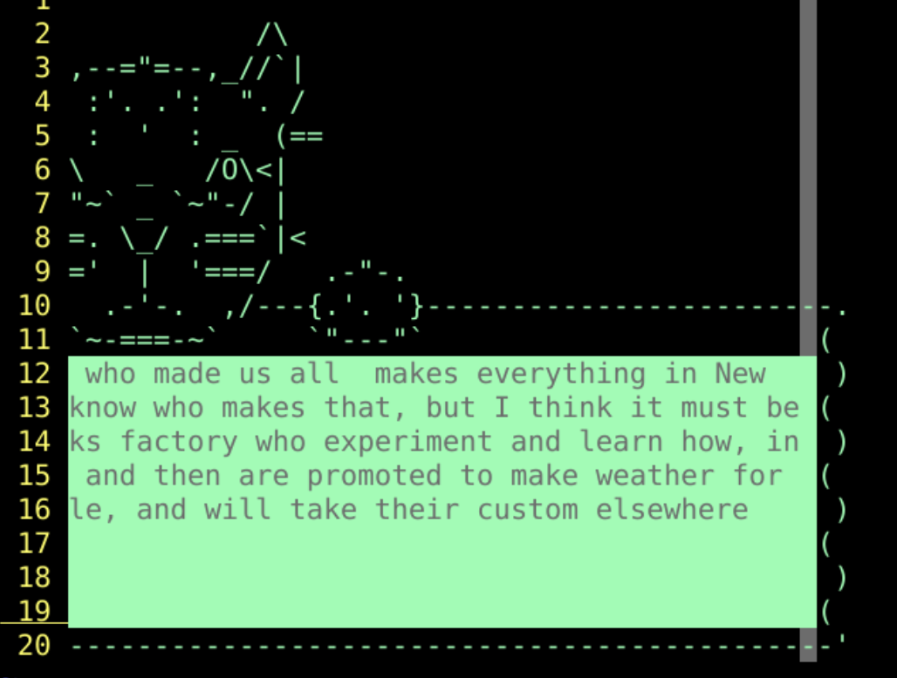
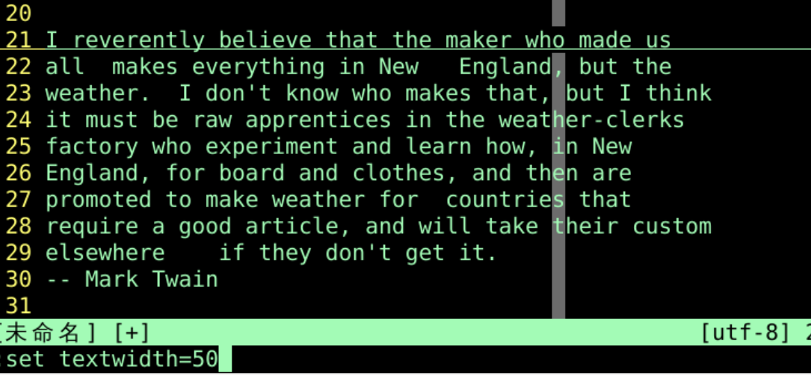
:set textwidth=50gq21G"ayG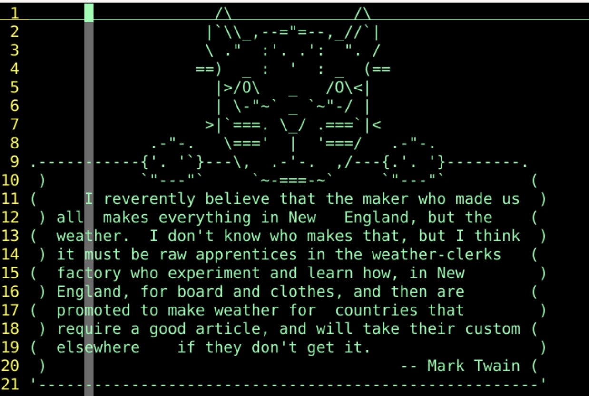
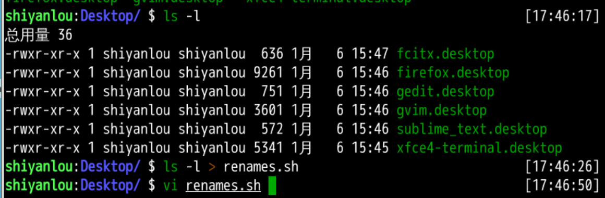
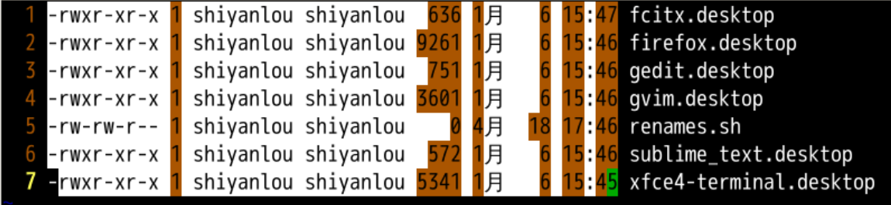
mv "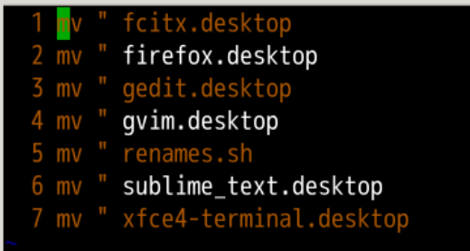
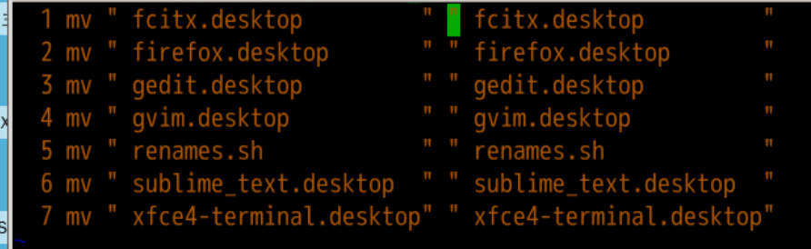
:'<,'>s/\%Vg/graphic/g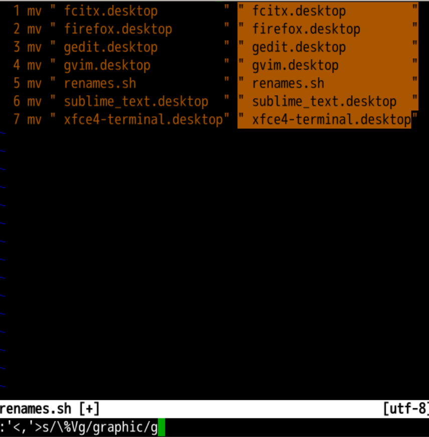
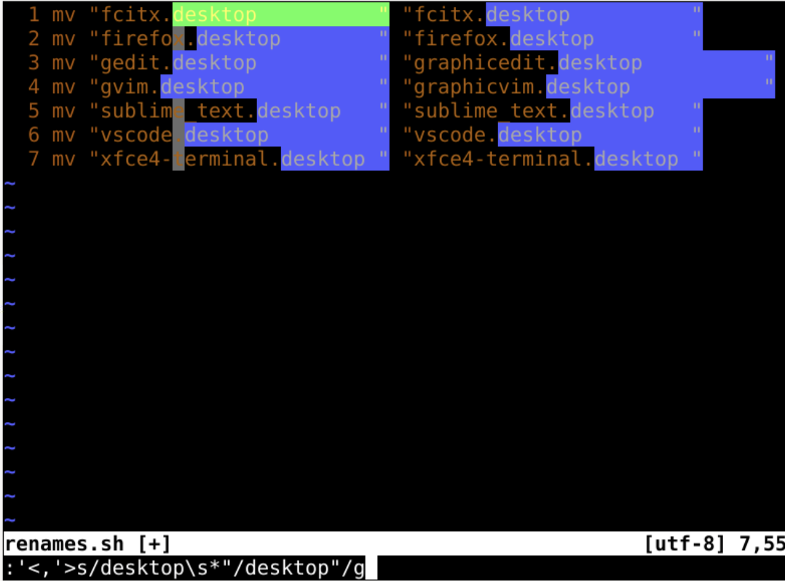
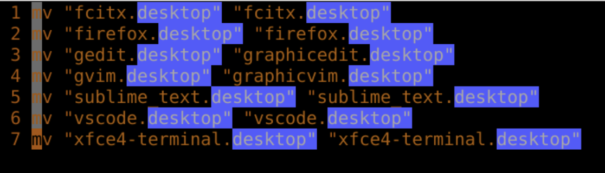
:wq保存退出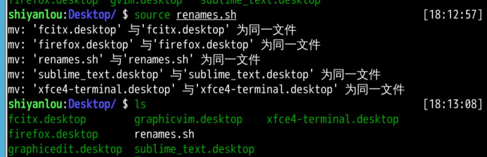
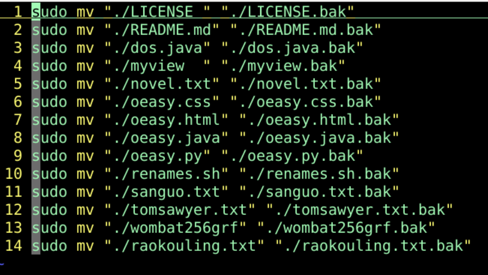
ls -l > renames.sh-- 可视 块 --motion:'<,'>d:'<,'>s/shiyanlou/oeasy/g 范围内批量替换:'<,'>s/\%Vg/graphic/g